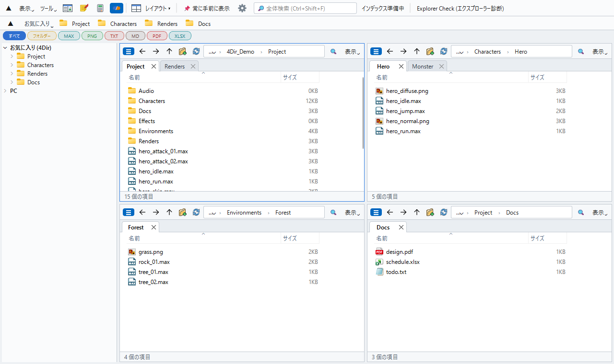
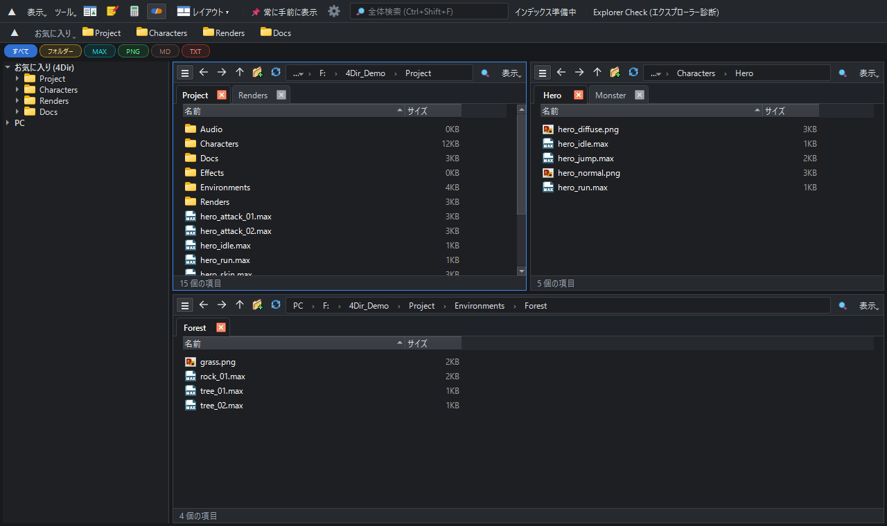

Windows エクスプローラーより速いマルチペイン ファイラー！！
インストール不要、展開してすぐ使えます。
⬇ 4Dir v0.9.156 をダウンロード⊞ Microsoft Store から入手
Windows 10/11 64 ビット · 91 MB · 2026-11-27 · 無料 · 🌐 対応言語 26
⭐ 4Dir を気に入ったら GitHub でスターをお願いします。
⭐ GitHub でスターを付ける4Dir を支援する
4Dir は無料で広告もありません。
時間の節約になったなら、少額の寄付が次のアップデートの力になります。
- Woojin Jeong
ウイルス対策ソフトや会社の PC が zip をブロックする場合は、Microsoft 署名済みのストア版をどうぞ（ストア版は Win+E 連携なし）。
⚠ 一部のウイルス対策ソフト（Microsoft Defender、HP Wolf Security など）が zip 内の 4Dir.exe をマルウェアと誤検出します。これは誤検出です。
4Dir.exe はアプリを起動するだけの 18 KB のランチャーで（ソース）、各社に報告済みです。
Bitdefender の分析で安全なファイルと確認され、今後の更新で検出が解除されます。
ブロックされる場合はストア版をご利用ください。
v0.9.156 の変更点
- 動画・GIF プレビュー：再生速度（0.25～4 倍）、「内容だけ」でも再生バーは残ります。ペインのプレビューと別ウィンドウはそれぞれ「内容だけ」を記憶。
- 設定：新しい動作ページ（マウス・ホイール・開く・ファイル操作・更新）を「ファイル一覧」から分離。ファイルの色ルールは「ファイル一覧」からも開けます。
- 修正：メイン ウィンドウを閉じた後、新しいウィンドウ（Win+E）がメインの隣に移らず、最後に閉じた新しいウィンドウの位置に開きます。

機能
最大 20 ペイン
1・2・3・4・6 ペインをワンクリックで、または最大 5 × 4 の自由なグリッドに。ペインごとに独立したタブ。
PC を重くしない
重い Windows シェルビューを使わず、フォルダーを直接読み込みます。待機中はタイマーもポーリングもなし。3ds Max やゲームなど重いアプリの横で開いたままでも安心です。
すぐに見つかる検索
入力するだけで全ドライブのファイル名を検索。独自インデックスがリアルタイムで更新され、管理者権限は不要です。
SVN の状態がひと目で
.svn を直接読んで変更・追加・競合のバッジを表示。中身が変わったフォルダーは赤に。Git・Perforce は Windows のオーバーレイで表示。
エクスプローラーと同じ操作感
同じショートカットキー、Windows の右クリックメニューそのまま、エクスプローラーや他のアプリとのドラッグ＆ドロップ。.webp 画像は右クリックで PNG・JPG に保存。
ポータブルでプライバシーも安心
設定は 4Dir フォルダー内だけに保存。ライト/ダーク、26 言語、一括リネーム、セッション復元、エクスプローラー診断を搭載。

インストール方法
- 上のボタン（または GitHub の Releases）から zip をダウンロードします。GitHub の緑の「Code → Download ZIP」はソースコードのみで、そのままでは動きません。
- zip を右クリック → プロパティ → 許可するにチェック → OK。（しないと毎回セキュリティ警告が表示されます）
- 好きな場所に展開して 4Dir.exe をダブルクリック。（止められた場合は 4Dir.vbs）
Windows SmartScreen が表示されたら 詳細情報 → 実行 をクリック。
ダウンロードの確認（任意）
コマンドプロンプトで certutil -hashfile 4Dir_v0.9.156.zip SHA256 を実行し、結果が次と一致すれば正規ファイルです：
b0c255027f02ac188b239b639f8211f49164a23a672cba551671e0f4f6b2d412
よくある質問
本当に無料？
はい。4Dir は無料のオープンソース（GPL-3.0）です。広告・アカウント登録・試用期間はありません。
会社で使ってもいいですか？
はい。4Dir は GPL-3.0 のフリーソフトなので、会社でも費用・登録なしで使えます。インストール不要のソフトなので、会社のセキュリティ規定でポータブルソフトが許可されているかだけ確認してください。
本当にエクスプローラーより速いの？
ファイル 1,000 個のフォルダーを新しいウィンドウで開くと、4Dir は 0.4 秒、エクスプローラーは約 2 秒でした。ウィンドウを 1 つ増やしたときのメモリ増加は 4Dir 約 10 MB、エクスプローラー約 130 MB。同じ PC（Windows 11・SSD）で各 5 回測った値です。1 つのフォルダーに数万ファイルあると差は小さくなります。
データを送信する？
個人情報は送信しません。1 日 1 回、新しいバージョンがあるかを確認するだけです（ツールメニューでオフにできます）。
問題が起きたら？
ツール → 問題報告用ログを保存 → 通知の「メールで送る」を押すか、zip を support@4dir.net に送ってください。GitHub の Issue でも受け付けます。